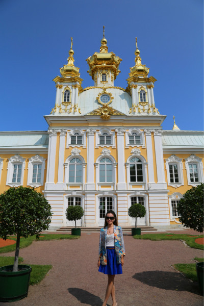

俄罗斯印象
莫斯科的红场，雄伟的克里姆林宫举世闻名，
被誉为“北方的威尼斯”的圣彼得堡优雅浪漫，
宁静宽阔的涅瓦河和热闹繁华的涅瓦大街，
这些都是俄罗斯的标签，
当然最不能错过的还是东宫中那些用200多年时间收集起来的，可能永远也看不完的展品。
圣瓦西里大教堂
圣克林姆林宫

夏宫(彼得宫城)
旅行方式：
自由行vs跟团。首先lz特别推崇自由行，也很喜欢自由行，自己设计路线的感觉真的很好。但是自由行的前提必须是安全和能基本交流。首先出来玩是身心的享受和放松，但是必须是以安全为前提的，俄罗斯的安全问题就很堪忧，包括著名城市莫斯科和圣彼得堡。一架飞机来的其他团友就在涅瓦大街被抢了，而且车开的特别快，摩托车飞驰过去想一阵风一样。另外在俄罗斯如果你不会说俄语，英语基本没人能听得懂，麦当劳，酒店前台，超市收银这些我认为应该有能听的懂英语的俄罗斯人的地方，基本没有碰见能流程交流的。所以俄罗斯还是跟团能玩的比较好。
跟团选择：
再决定跟团去俄罗斯之后，研究了一下旅行社的行程，一般俄罗斯的团分成4种：
7日（莫斯科2天，圣彼得堡3天，路程2天）；
8日（莫斯科2天，圣彼得堡3天，谢镇1天，路程2天）；
7日（莫斯科2天，圣彼得堡3天，三个小镇2天，路程2天）；
俄罗斯+北欧12或13天。我走的是9天的俄罗斯，因为一般lz出去玩的宗旨就是深度游，当我到了苏兹达里小镇的时候，真的觉得这个选择太正确了，如果有条件自由行的朋友一定要在苏兹达里小镇静静的呆上几天。
天气：
俄罗斯的最佳旅游时间是6月-9月，但一年中的雨水也大都集中在这几个月里，俄罗斯的天气预报是最不准的几个天气预报之一，只能看大概的温度，典型的海洋性气候，下不下雨实在说不好。365天中有300天阴雨，这次我们非常非常幸运，基本都是大晴天，几次小雨都是在不重要的景点。
衣服：
基本上7,8月份可以以裙子或者说夏天的衣服为主，但是一定要准备一件小皮衣或者一件小外套。
历史（原创沙皇进程图）：
俄罗斯是一个悠久的国家，从恢弘的建筑和大家上随处可见的名人雕像就能看出来，这是一个战斗民族，充满着民族自豪感的民族。如果没有了解俄罗斯的历史，看的感受也就不那么大了，就我爸爸妈妈这个年纪的人，当时是中国和苏联的蜜月时期，苏联是中国的老大哥，他们有很深的苏联情节，但是就我这代90后就没有太深感触了，去过很多国家，选择俄罗斯我纯粹是想去感受一下顶尖的建筑艺术。下面我就简单的介绍一下俄罗斯历代沙皇串起来的历史脉络。希望能让各位看官更好的理解。
彼得大帝（亲手杀死自己唯一的儿子）------叶卡捷琳娜一世（彼得大帝最爱的女人，原名马尔塔，是立陶宛人）------彼得二世（彼得大帝的孙子）------安娜公主（彼得大帝的侄女）------伊凡六世（是安娜公主和安东之子，其母安娜发动政变而即位）------伊丽莎白女皇（彼得大帝和叶卡捷琳娜一世的小女儿，无子嗣）------安娜（是伊丽莎白的姐姐 彼得大帝的长女 后嫁去德国）------彼得三世（安娜的儿子，彼得大帝的外孙，德意志人）------叶卡捷琳娜二世（德国人，彼得三世的妻子，最著名的女沙皇，并不受丈夫的宠爱，最后亲手毒死了彼得三世，在叶卡捷琳娜二世在位期间，三次瓜分了波兰，六次入侵土耳其，把俄罗斯的疆土扩大了三分之一，她曾经说过如果她能活到200岁，整个欧洲都是俄罗斯，她的宫殿，叶卡捷琳娜宫极尽奢华，黄金穿廊，著名的琥珀屋，和死后留下的一万五千件衣服，留给世人的只有感叹和敬畏）------保罗一世（叶卡捷琳娜二世的儿子，但是当时她想把皇位传给长孙亚历山大一世，但是临终前诏书被保罗一世毁掉，保罗一世有三个儿子）------亚历山大一世（保罗一世的大儿子，从小和奶奶一起长大，有勇有谋，最后捂死了自己的亲生父亲保罗一世，成为的新的沙皇）------尼古拉一世（保罗一世最小的儿子，亚历山大一世本来想把皇位传给他的弟弟，尼古拉一世的哥哥，但是亚历山大的弟弟爱死了一个波兰女人，选择爱美人不爱江山，放弃了皇位，尼古拉一世为了感谢哥哥放弃的皇位，给哥哥建造了一个豪华的宫殿，现在是普京的家，俄罗斯政府允许普京一直住到他死去，尼古拉一世俄罗斯人叫他臭名昭著的尼古拉一世，因为他间接的害死了俄罗斯诗歌的太阳普希金）------亚历山大二世（尼古拉一世的长子）------亚历山大三世（亚历山大二世的儿子）------尼古拉二世（二月革命）------苏联
因为我没研究过历史，都是从导游那边获取的信息和在网上查资料简单补充的，可能有错误，仅仅为了大家能更好的理解，另俄罗斯沙皇的名字并不是排序的，是他们自己起的，比如叶卡捷琳娜一世和叶卡捷琳娜二世是基本没有任何关系的，是因为叶卡捷琳娜二世非常羡慕叶卡捷琳娜一世拥有彼得大帝的心，自己的爱情又不幸福，所以给自己取名为叶卡捷琳娜二世。